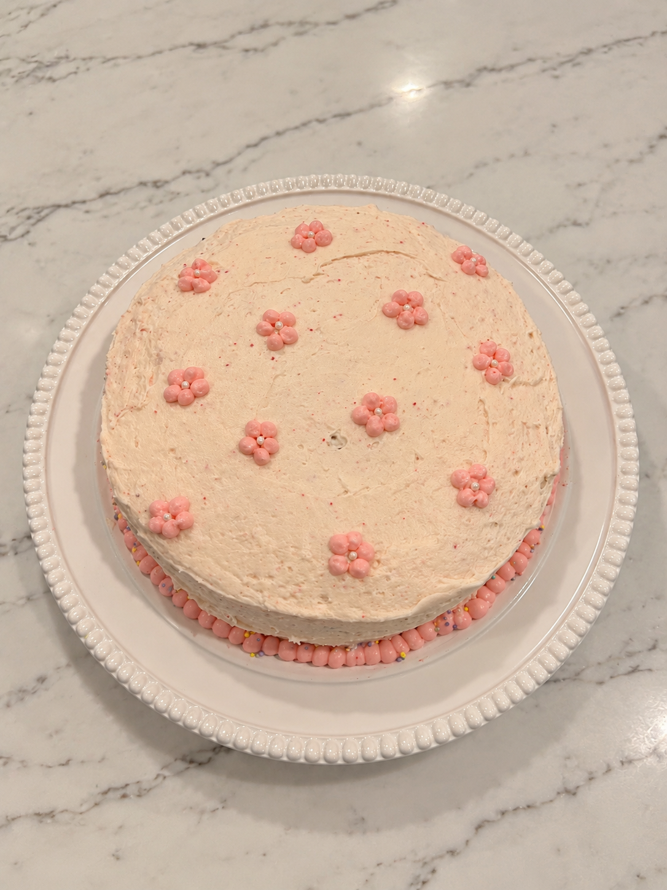
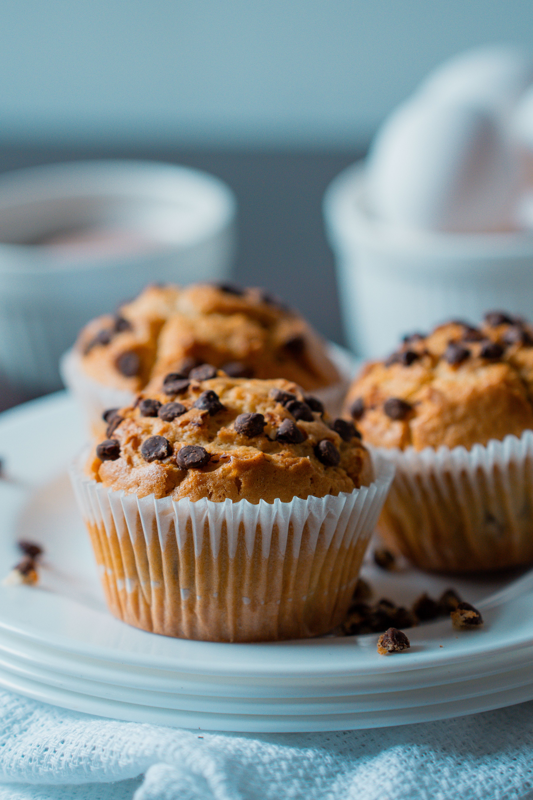

Let's Bake!
A collection of some of my favorite recipes for classic baked goods.
Explore All RecipesExplore My Favorites
Classic Recipes
Here you will find my all-time favorite recipes for classics like chocolate cake and chocolate chip cookies.
Jumping Into Fall
In a fall mood? Here are some recipes to cure that spiced, warm craving.
Fun Party Ideas
Hosting or attending a party? Here are some ideas for what to make for a group gathering or party.
My Baking Essentials
- Measuring cups and spoons
- Mixing bowls
- Whisk and rubber spatula
- Baking sheets and pans
- Parchment paper
Classic Recipes
Here you will find my all-time favorite recipes for classics like chocolate cake and chocolate chip cookies.
Jumping Into Fall
In a fall mood? Here are some recipes to cure that spiced, warm craving.
Fun Party Ideas
Hosting or attending a party? Here are some ideas for what to make for a group gathering or party.
The Best Chocolate Cake You Will Ever Make!

I have been making this chocolate cake recipe for nearly ten years, and it has never failed me. Moist, rich, and delicious, this cake will have your friends and family begging for the recipe. I make this cake for my sister's birthday every year, and probably ten other times throughout the year for various occasions. It's a fan favorite!
Seasonal Favorites
Pumpkin Muffins
It's that time of year! These pumpkin muffins are perfect to kick that pumpkin craving. Try adding chocolate chips or walnuts for some added flavor and texture!

Cinnamon Roll Scones
Need an easy but delicious treat for anything from breakfast to a party? Try making these cinnamon roll scones!